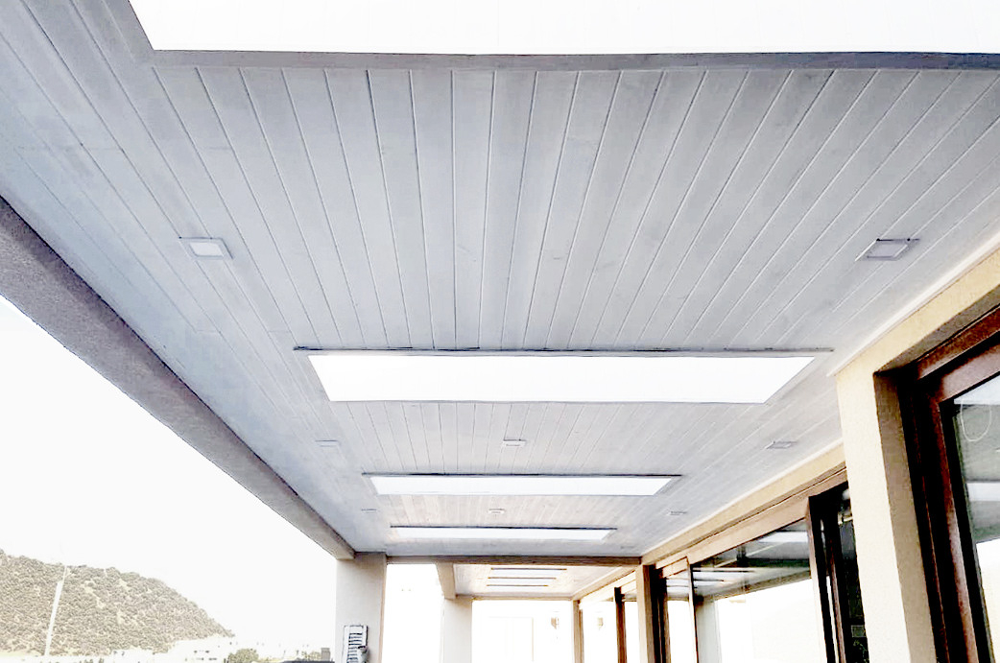

<div class="container project-view">

    <div class="row">
        <div class="col-md-8 project-images">
            
            
        </div>
        <div class="col-md-4">
            <div class="project-info">
                <h2 align="center" style="color:rgb(162, 94, 92)">Los Litres</h2>

                <div class="details">
                    <div class="info-text">
                        <span class="title">Proyecto:</span>
                        <span class="val" style="color:rgb(162, 94, 92)">Los Litres
                    </div>
                    <div class="info-text">
                        <span class="title">Ubicación:</span>
                        <span class="val" style="color:rgb(162, 94, 92)"> Lo Barnechea, Santiago.</span>
                    </div>
                    <div class="info-text">
                        <span class="title">Año:</span>
                        <span class="val" style="color:rgb(162, 94, 92)">2019</span>
                    </div>
                    <div class="info-text">
                        <span class="title">Superficie:</span>
                        <span class="val" style="color:rgb(162, 94, 92)">m2: 14 m2</span>
                    </div>
                </div>
                <h4  style="color:rgb(162, 94, 92)">Descripción</h4>
                <p align="justify">
              En este singular quincho combinamos un ambiente monocromático en escala de grises con un cielo revestido en pino insigne y acabado nórdico. Es así como le entregamos a nuestro cliente un espacio de colores neutros totalmente atemporal que se mantendrá siempre vigente.</p>

                
                </p>
                        
                        
            </div>
        </div>
    </div>
</div>
